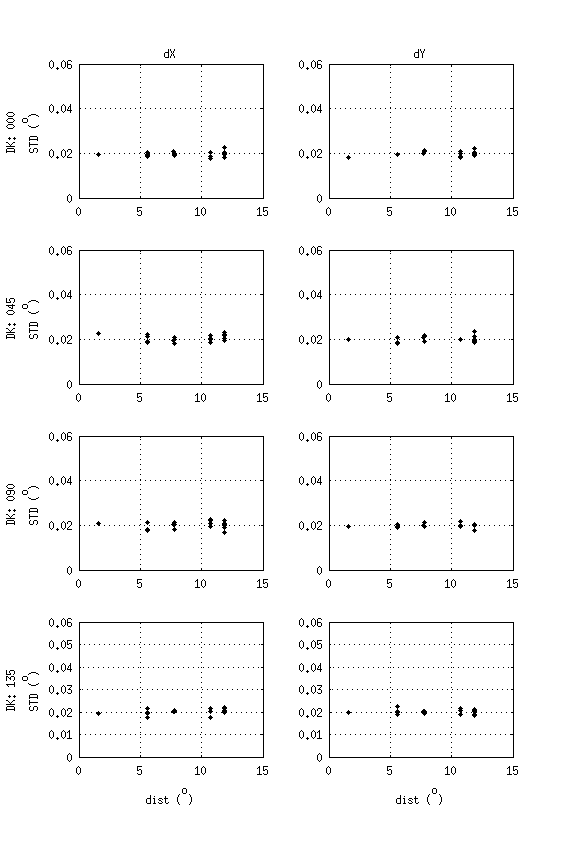

In this posting I present my analysis of RPS data from the Jan 2018 calibration season. Using the parameter estimation method described in , polarization angles, $\phi_d$, and cross-polar leakages, $\epsilon\,$, were estimated for all individual detectors across the focal plane over four different DK-angles (see §4.1 for all schedules covered). I also calculate axis of the pair-diff polarization angle (dubbed $\phi_Q$) of each pixel in order to estimate the global polarization rotation, $\alpha$, of the focal plane. Some DK-dependence on $\phi_d$ estimations are found on the level of $\sim0.3^\circ$ which translates to a <0.1° DK-dependent variation on $\phi_Q$. Estimations of same-DK datasets are consistent to <0.1°.
Since detectors on MCE0 are clocked 90° with respect to the other MCE's I calculate global polarization rotation angles for MCE0 alone to be $\alpha=-1.34\pm0.32^\circ$. For MCE's 1, 2, and 3 combined $\alpha = -1.02\pm0.28^\circ$. With all MCE's combined $\alpha=-1.11\pm0.32^\circ$.
I present detector polarization response angles in a coordinate system that is referenced to the boresight in x-y coordinates. For completeness, we define a new parameter, $\phi$, as an angle measuring an orientation direction in the tangent plane at any $x,y$ point relative to the local orientation vectors ($\hat{D}_1,\hat{D}_2$) (see ). The $\phi$-angle is measured from the $\hat{D}_1$-axis toward the $-\hat{D}_2$-axis. Figure 1.1 shows a diagram of the relationship between the co-polar axes with the mirror installed.
In the RPS analysis we estimate $\psi$, the angle from the RPS co-polar axis, $\hat{S}_\phi$, to the detector co-polar axis, $\hat{D}_\phi$, in the plane tangent to the detector pointing, $\hat{D}_3$, when it is directly coupled to the source pointing, $\hat{S}_3$ (i.e. $\hat{S}_3\cdot\hat{D}_3=1$ in ). The angle to $\hat{S}_\phi$ from $\hat{D}_1$, measured in the plane tangent to the source pointing, is called $\phi_s$ and is calculated via keck_beam_map_pointing using input mount, mirror, and source location parameters for a given detector pointing.
Since $\psi$ is measured between the source and detector co-polar axes it follows that the angle from $\hat{D}_1$ to $\hat{D}_\phi$, called $\phi_d$, is just the sum between $\psi$ and $\phi_s$:
$$
\phi_d \equiv \psi + \phi_s
$$
Presenting angles in terms of $\phi_d$ is useful because, unlike $\chi$-angles, $\phi_d$ is naturally aligned along $0^\circ$ and $90^\circ$ for pol A and pol B detectors respectively. Using the $r$-$\theta$ convention described in (), the angle from $\hat{D}_1$ to the detector co-polar axis, labeled $\hat{D}_\chi$ in the posting, is $\theta+\chi$ and so it follows that $\phi_d$ of a detector is related to its $\chi$-angle by:
$$
\chi = \phi_d-\theta
$$
Diagram showing the relationship between local orientation axes $\left(\hat{D}_1,\hat{D}_2\right)$, RPS co-polar axis $\left(\hat{S}_\phi\right)$ , and detector co-polar axis $\left(\hat{D}_\phi\right)$ for a given detector pointing when it is coupled directly with the RPS.
In practice, we're interested how the orientations of the detectors combine into a single orientation of the pair-diff axis (or +Q-axis). By calculating Q and U for a pixel, we can back out the +Q-axis, $\phi_Q$, in addition to the polarization efficiency.
$$
\begin{split}
&Q = \left(\cos\phi_{d,A} - \cos\phi_{d,B}\right)/2 \\
&U = \left(\sin\phi_{d,A} - \sin\phi_{d,B}\right)/2 \\
&\phi_Q = \frac{1}{2}\tan^{-1}\left(\frac{U}{Q}\right)\\
&\text{pol-eff} = \sqrt{Q^2+U^2}\\
\end{split}
$$
Naive vs. Fit Mirror Parameters
The source angle, $\phi_s$ is calculated using mount, mirror, and source axes and location inputs and thus requires knowledge of each parameter to high precision. Aside from the location of the aperture WRT the elevation axis, mount parameters are acquired from optical star pointing. The mirror and source parameters, however, must be derived by other means. Typically, beam maps with the moon are taken each season under the premise that the location of the moon is well known and so the mirror parameters can be estimated to good precision. No moon observations were made during the Jan 2018 measurement season, so in , moon observations are used in conjunction with RPS test observations from Jan 2017 to verify the location of the RPS. For this year, under the assumption that deployment of the RPS on the MAPO is sufficiently repeatable, I estimate the mirror parameters using beam centers estimated with Jan 2018 RPS data. I assumed that CMB-derived beam centers were preserved through the mirror pointing and fit for mirror parameters at which the residuals between the CMB-derived and RPS-derived beam centers were minimized across the focal plane and all deck angles. To expedite the fitting process, I used only one detector-pair from each tile. The resulting fit parameters were [$tilt =44.687^\circ$ $roll = 0.148^\circ$]. Figure 2.1 shows the quiver plots of residuals between CMB-derived and RPS-derived beam centers with naive and fit parameters of [$tilt = 45^\circ$ and $roll = 0^\circ$].
Caption
While systematic features due to pointing are not completely eliminated by the fitting process, Figure 2.1 shows that the uniform offset effect is eliminated. We do see some interesting features across the focal plane that appear fixed WRT the mirror. I speculate that this could be a result of imperfections in the mirror. With the new mirror parameters, the mean pointing residual across all channels and DK's is $0 \pm 0.03^\circ$. I go on to show in the Error Analysis section that the impact on the repeatability of angle estimations from beam center offsets are small compared to other sources of error. Additionally, I explore the systematic impact on parameter estimations due to the repeatability with which we can redeploy the RPS on the MAPO mast from season to season.
Parameter Consistency Checks
To probe the susceptibility of the data to systematics, a sort of DK jackknife was performed on the data where per-channel parameters estimated at each DK-angle were subtracted from each other and were checked whether the residual distributions are consistent with noise. In Figure 1.3, parameters for each channel were plotted against those measured at other DK-angles. Two-thirds of the focal plane was covered twice a DK of $45^\circ$ so in the bottom-most left plot, two different $DK=45$ measurements are plotted against each other to show the expected repeatability of each parameter without influence of DK-dependent systematics.
Note: MCE0 is clocked $90^\circ$ compared to other MCE's on the focal plane. To make plotting easier, "Pol A" detectors in this posting refer to detectors most closely aligned to $0^\circ$ and "Pol B" detectors refer to those most closely aligned with $90^\circ\,$.
Dk-for-DK scatter plots and residual histograms. In the scatter plots, $\phi_s$ and $\psi$ have been centered by adding and subtracting DK angles respectively. For the residual histograms, $\phi_s$ and $\psi$ were not altered before differencing.
I use the two-sample Kolgomorov-Smirnov test in Matlab (kstest2) to determine if the residual distributions are consistent with noise. The ks-test rejects all distributions as being consistent with noise with $5\sigma$ confidence except in the case of DK45-vs-DK45 for Pol A detectors and DK45-vs-DK135 for pol B detectors which are only rejected with $1\sigma$ confidence. A mean offset can be seen in most of the residual histograms that appears opposite between A/B detectors in behavior, but not in magnitude. The phenomenology of this effect is similar to what is expected if the RPS is not pointing directly at the telescope (See ), which is important because Pol A and Pol B detectors would be biased differently at a given DK-angle. Another posting is in the works that investigates this issue more thoroughly.
The standard deviations from the DK45-vs-DK45 residuals are $0.065^\circ$. I divide this by $\sqrt(2)$ to get an estimate of the statistical uncertainty without DK-dependent effects to be $0.045^\circ$ and compare this value to predictions in the error analysis section.
Results
Global Results
This section presents the results on global polarization rotation angle (conventionally labeled $\alpha$ ()) and discusses the assigned uncertainties. To get a sense of the impact of DK-dependent results, $\alpha$ is calculated Per-DK as the weighted mean of $\phi_d$ estimations using the inverse of median per-detector NET's from the 2017 CMB observing season as weights. Figure 2.3 shows histograms of $\phi_d$ and $\epsilon$ estimations for each DK-angle and also for per-channel parameters averaged across DK-angles. Additionally, to examine the effect of MCE0 being clocked $90^\circ$, histograms and global rotation angles are shown without MCE0 included.
Histogram of $\phi_d$ and $\epsilon$ estimations per-DK with 1/NET used to determine $\alpha$ (red line). The All tab averages per-channel estimations first across DK's using inverse of fit residuals as weights and then averages all detectors together using 1/NET's as weights.
When MCE0 and the other MCEs are plotted separately, the non-orthogonality between A and B detectors becomes more apparent. Independent of DK angle, Pol A and Pol B distributions are approximately Gaussian and A/B orthogonality is rejected to $>1\sigma$. As such, two global rotation angles are assigned, one for Pol A detectors, $\alpha_a$, and one for Pol B detectors, $\alpha_b$. Due to the DK-dependence on $\phi_d$ estimations, I assign a systematic uncertainty of $\sigma_{\alpha_a} = 0.3^\circ$ and $\sigma_{\alpha_b} = 0.45^\circ$.
Global rotation angles are calculated by first averaging $\phi_d$ for each channel across DK-angles using fit residuals as weights and then calculating $\alpha$ by averaging across all $\phi_d$'s using 1/NET as weights. Global rotation angles for different combinations of MCE's are tabulated below.
Type
Pol
$\alpha$ (°)
$\sigma_\alpha\text{(stat)}$ (°)
$\sigma_\alpha\text{(sys)}$ (°)
MCE's 1-3
A
-0.72
0.34
0.30
B
88.64
0.34
0.45
diff
-1.02
0.28
--
MCE0 only
B
-1.67
0.34
0.30
A
88.98
0.33
0.45
diff
-1.34
0.30
--
All MCE's
A
-0.99
0.54
0.30
B
88.74
0.37
0.45
diff
-1.11
0.32
--
Looking at (), the statistical uncertainties when MCE0 is counted separately seem to be what we'd reasonably expect.
Per-Detector Results
This section examines detector-to-detector variations, so an offset of $+1.0^\circ$ was applied to all detectors to bring them around zero. Figure 2.1 shows a plot of $\phi_d$ and $\epsilon$ estimations per detector for each of the four $DK$ angles. It should also be noted that each data set was actually taken with a $1.25^\circ$ offset in $DK$ to account for the drum angle, but plot legends have been rounded to the nearest multiple of 5 for convenience.
The channel plots in Fig 2.1 show obvious outliers in the data. Interestingly, some tiles exhibit unusual deviations from the apparent mean across the tile (e.g. Chans around 1500 for $\phi_d$ and around 2400 for $\epsilon$) that is consistent across DK-angles even when the result is unphysical (around chans 1200 for $\epsilon$).
Tile Plots
Figure 2.2 shows tile-plots of $\phi_d$, $\phi_s$, $\psi$, and $\epsilon$.
Notable Clicks:
DK45+xpol+ - Some tiles such as 4, 7, and 3 have xpol leakage that is consistently negative across deck angles.
DK90+phi - DK90 measurements appear to be more noisy than measurements at other DK angles. Additionally, Pol B detectors are consistently underestimated across the focal plane compared to other deck angles.
$\phi_d$ pair-diff - We can see that the Pol A and Pol B detectors are not orthogonal by $\sim 0.5^\circ$ which appears to be consistent across the focal plane with some dependence on DK.
Per-DK Tile Plots: Pol A $\phi_d$ are as-measured and Pol B's are $\phi_d-90$. $\psi$ is similar with Pol B's $\psi-90$. $\phi_s$ and cross-pol leakage are as-measured. $\phi_d$ pair-diff is $(\phi_{d,B}-90)-\phi_{d,A}$.
Error Analysis
From §1.1, a co-polar axis is related to the telescope orientation axis by:
$$
\phi_d = \psi + \phi_s
$$
As such, uncertainty on $\phi_d$ can enter either through parameter estimations of $\psi$ or through the pointing model and beam center estimations when calculating $\phi_s$.
Source Stability
The source output fluctuates at 0.5% of the amplitude on timescales relevant to demodulated timestream samples ($50 \text{ms}$). Simulations of rastersets were conducted where a Gaussian beam with typical BICEP3 beam characteristics was convolved with a point source with an amplitude that fluctuated by 0.5% per sample and modulated as a function of source command angle. This fluctuation in the source output reflects on the apparent repeatability of estimations of $\psi$ by $\sigma_{\psi}<0.025^\circ$. Since the demodulator introduces its own noise, this estimation is mostly useful in demonstrating that effects due to gain variations seen in other RPS analyses () were addressed during the Jan 2018 RPS campaign.
Uncertainty on Source Command Angle
The quadrature sum of the positional repeatability of the stage and the stochastic fluctuations of the tilt meter when the RPS is deployed on the MAPO mast is $\sigma_{\eta}<0.013^\circ$. Simulations were conducted where each commanded angle of the source was dithered by $0.02^\circ$ and $\psi$ was estimated assuming the non-dithered command angles. The simulations predict that a $0.02^\circ$ uncertainty of the source command angle contaminates estimations on $\psi$ by $\sigma_{\psi}<0.006^\circ$.
Demodulation
In order to isolate ambient signals when observing the RPS, the amplitude of the RPS was chopped via an RF PIN switch in the signal chain of the BBNS. During the data reduction process raw data timestreams were ultimately demodulated using a digital lock-in demodulation algorithm described in (). The apparent fluctuations on the source amplitude due to the cumulative affects of BBNS stability and noise injected from the demodulator were estimated to be $\sim 1.5\%$ of the peak amplitude. Additionally, the base noise of the demodulated timestreams was estimated to be $\sim0.06\%$ of the peak amplitude. The same simulation approach described in §3.1 was used to estimate the level contamination on the repeatability of $\psi$, except some additional noise of $0.06\%$ of the source amplitude was added to the whole of each timestream in the rasterset. Noise injected into demodulated timestreams impact the apparent repeatability of estimations by $\sigma_{\psi}<0.072^\circ$.
Ground Reflections
Demodulated timestreams of RPS data are spliced together to acquire beam maps that include ground reflections that appear at ~9 degrees below the source elevation. Ground reflections are -25dB of the source amplitude when the detectors are directly coupled to the source. A simple model is set up to estimate the contribution of ground reflections to the power measured at the source.
The total power of a 2D Gaussian is calculated with typical BICEP3 beam characteristics when it is directly coupled to a point source with an amplitude of 1. The total power is compared to the total power calculated of the same 2D Gaussian coupled to a point source of amplitude 1 with an additional point source offset by 9 degrees from the main source and with an amplitude of -25dB. The difference between the power with and without ground reflections is $O\left(10^{-8}\right)$ and the impact on parameter estimations of $\psi$ are negligible.
Uncertainty on Estimated Beam Centers
We expect an impact on the repeatability on $\phi_s$ as a result of uncertainty in estimated beam centroids. I estimate an upper limit on the impact in repeatability on $\phi_s$ due to beam center uncertainty by simulating beam centers per-tile that have been dithered by some RMS and examining the resulting distribution of calculated source polarizations. I calculate $\phi_s$ with the same input pointing model parameters used in the RPS analysis, substituting in dithered beam centers. I then calculate the standard deviation of the resulting distribution of source angles, $\sigma_{\phi_s}\,$, as a function of distance from the focal plane boresight. In figure 1.1, looking at the per-tile beam center residuals as a function of mean distance from the boresight center we can see some increase in the scatter of beam center estimations in edge tiles that is independent of $DK$ angle. On average, however, the standard deviation of beam center residuals is $\sim 0.02^\circ$, so I use this value as the input scatter on the noise realizations of beam center offsets.
Scatter plot of per-tile standard deviations of beam center offsets estimated by real data (left) and dithered by and RMS of $0.02^\circ$ (right).

Figure 1.2 juxtaposes the per-tile standard deviations of source polarization angles calculated from the estimated beam centers on real data with those of cmb-derived beam centers dithered by a $0.02^\circ$ RMS. Most of the simulated per-tile $\sigma_{\phi_s}\,$ are within <10% of the estimations on real data, so I consider this a reasonable description of the system and defer a more thorough investigation for a later date.
The upward trend in Figure 1.2 is mainly due to the fact that the source polarization varies more drastically at the edges of the focal plane and thus per-tile $\sigma_{\phi_s}\,$ increases more as a result optical effects than actual random scatter. Assuming that they are the true beam centers, I now subtract the $\phi_s$ calculated from the cmb-derived beam centers to eliminate this effect. While the dependence on $\sigma_{\phi_s}\,$ is not completely eliminated, I can still establish a conservative upper limit on the contribution to the repeatability of source polarization angle due to uncertainty in the estimated beam centroids to be $\sigma_{\phi_s} < 10''$ which is in agreement with the DK45-vs-DK45 residuals seen in §1.3.
RPS Mispointing
I use the information in Colin's posting () as the foundation for investigating effects due to mispointing of the RPS on the mast. The detector polarization angle WRT to the source, $\phi_d$, can be biased if the RPS is assumed to be directly pointing at the telescope but is actually offset in local azimuth $\alpha$ or elevation $\beta$. Alignment strips are installed on the RPS enclosure which allows us to ensure that the RPS is aligned in $\alpha$ to <1°. The RPS is not adjustable in elevation however and, as of this posting, I cannot reasonably assume that the mast was designed with some built-in elevation offset. As such, the RPS is almost certainly misaligned in $\beta$ by $\sim 2.3^\circ$, which is the elevation of the source as seen from the telescope. Given a misalignment of the RPS, we'd expect to see some DK-dependence in $\phi_d$ estimations that is proportional to the magnitude of the offset in $\alpha$ and $\beta$:
A simple simulation was set up to compare the effect described in Colin's posting to the real data.
For each tile, dither channels by the standard deviations measured by the data.
For a given offset of $\alpha$ and $\beta$, calculate the modulation curves of each detector using Eq. 1 for $\eta = [-180:30:180]$.
Estimate $\phi$ using RPS analysis pipeline.
For now, I assume that cross-polarization response and miscollimation effects are zero.
I found that the combination of $\alpha$ and $\beta$ that most resembled the behavior in the data when $\alpha\sim-\beta$. The figure below shows four sims
of $\alpha = 2.5^\circ,5^\circ$ and $\beta = -\alpha$ for A/B detectors that are excactly 90° apart and a case where B detectors are 90.5° apart from A detectors.
Per-DK tile plots of sims with non-zero mispointing of the RPS compared to tile plots from real data. Pol B data has $90^deg$ subtracted from it before taking pair diffs.
We can see from Figure 3.4 that the real data follows a similar behavior of the simulated data when $[\alpha,\beta] = [5^\circ.-5^\circ]$ with a consistent $0.5^\circ$ offset. However, the case of Pol B detectors being offset by $-0.5^\circ$ WRT $90^\circ$ doesn't match the behavior of the data at all. Further investigation into this phenomena is required before any assumptions can be made about the implicit DK-dependent bias on $\phi_d$ can be made. For now, a rough estimate of $\sigma_{\psi} = 0.25^\circ$ is given to address this issue.
Repeatability on Mirror and Source Parameters
Telescope boresight pointing in topocentric horizon coordinates is converted to a source location on the focal plane with the telescope boresight at the origin via a pointing model using mirror orientation and source location in topocentric coordinates as input. The mirror parameters are approximated during the measurement and are later derived by taking beam maps of the moon. After the mirror parameters are derived, the parameters for the source location are then fit using the new mirror parameters as given.
No observations of the Moon were conducted during the season that this RPS data was taken, so I establish upper limits on the location of the source using the estimated source locations from preceding years. The RPS fixed atop a 12.5m tall mast and is leveled WRT to gravity using a high-precision tilt meter to within $0.006^\circ$. At a distance of 196m from the telescope, a $0.006^\circ$ repeatability in leveling corresponds to a repeatability in source azimuth of $1.6''$. The impact on the apparent repeatability of $\phi_d$ still needs to be investigated.
Total Uncertainty on $\phi_d$
Statistical Uncertainty
$\sigma_{\phi_s}$ (°)
$\sigma_{\psi}$ (°)
Demodulation Noise / Source Stability
--
$0.072^\circ$
Command Angle Uncertainty
--
$0.006^\circ$
Beam Center Estimations
$0.003^\circ$
--
Systematic Uncertainty
$\sigma_{\phi_s}$ (°)
$\sigma_{\psi}$ (°)
DK-to-DK consistency
--
$0.25^\circ$
RPS Location Repeatabiltiy
--
--
Total $\sigma_{\phi_d}$
$0.08^\circ$ (stat)
$0.25^\circ$ (sys)
Linked previous postings
Appendix
Schedules
Reduction Plots
Top Modulation curves of all tiles. Middle-Top Fits to modulation curves. Middle-Bottom Fractional residuals. Bottom Mean and $1\sigma$ errorbars of per-rotation-angle normalized amplitudes.
RPS Orientation Effect Scatter Plots
As mentioned in §3.7, sims were run to investigate the DK-dependence on polarization angle estimates for given inputs of $\alpha$ and $\beta$. The pager below shows DK-vs-DK scatter plots similar to Figure 1.3. We can see that the configuration that most resembles the behavior of the real data is when $\alpha \sim -\beta$. Note: Not all combinations work.